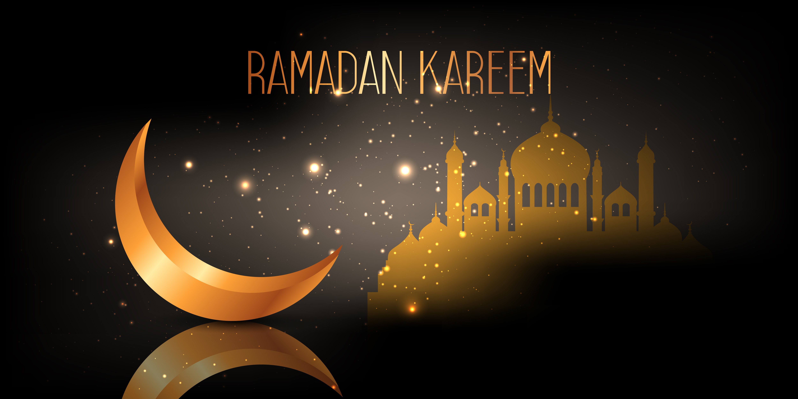
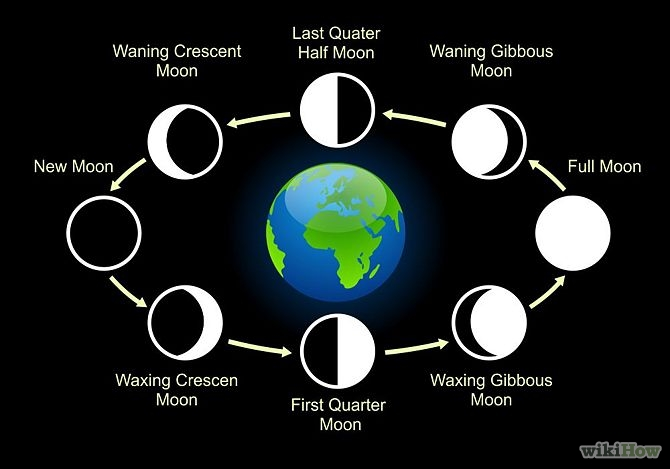
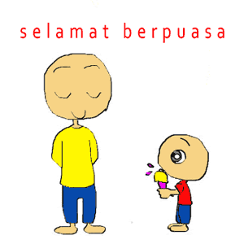
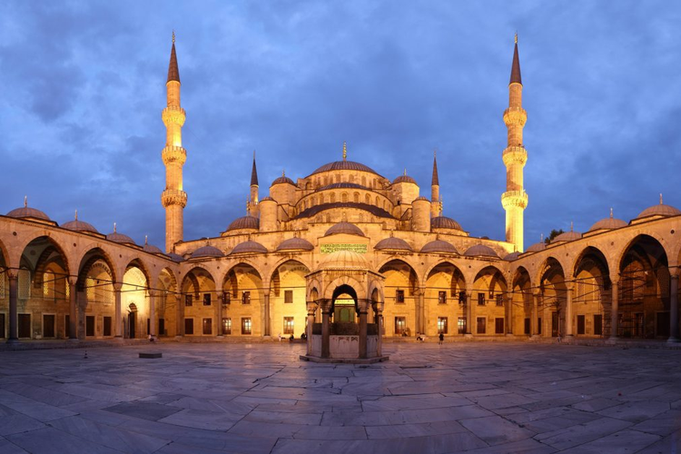
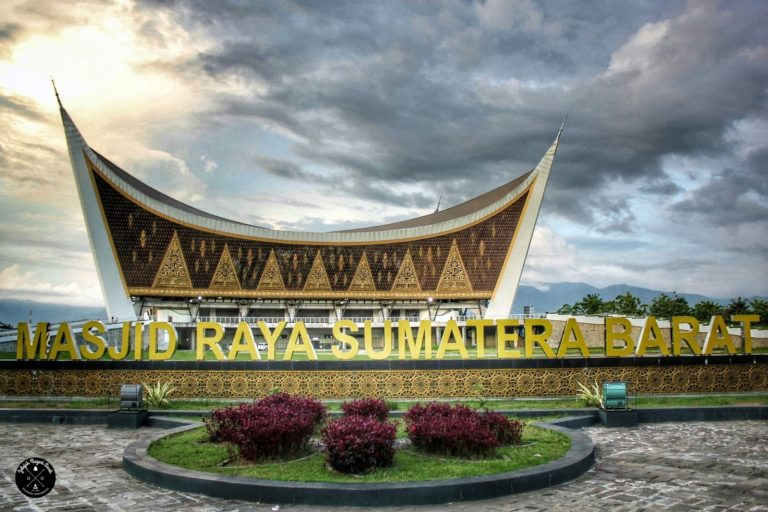

Sejarah Bulan Ramadan

Bulan Ramadan adalah turunnya Al Quran, Petunjuk bagi umat manusia, dan pembuktian adanya Nabi dan Rasul, sebagai tuntunan hidup, dan kriteria (benar dan salah).
Seluruh umat Islam wajib berpuasa di bulan itu, dan siapapun yang sedang sakit atau dalam perjalanan, boleh tidak berpuasa dan diwajibkan mengganti pada hari yang lain. Allah memberikan kamu kemudahan dan tidak menginginkan kesusahan bagimu.
Untuk wanita harus menyelesaikan menstruasi, setelah itu wajib menggantinya setelah Ramadhan dan bahwa Anda harus mengagungkan Allah karena telah membimbing Anda, dan Anda juga harus berterima kasih.
Geografis

“Sesungguhnya bilangan bulan pada sisi Allah adalah dua belas bulan, dalam ketetapan Allah di waktu Dia menciptakan langit dan bumi, di antaranya empat bulan haram. Itulah (ketetapan) agama yang lurus, maka janganlah kamu menganiaya diri kamu dalam bulan yang empat itu, dan perangilah kaum musyrikin itu semuanya sebagaimana merekapun memerangi kamu semuanya, dan ketahuilah bahwasanya Allah beserta orang-orang yang bertakwa.”(QS At Taubah (9): 36)
Puasa Di Bulan Ramadan

Dalam Islam, puasa (disebut juga Shaum) yang bersifat wajib dilakukan pada bulan Ramadhan selama satu bulan penuh dan ditutup dengan Hari Raya Idul Fitri. Puasa dilakukan dengan menahan diri dari makan dan minum dan dari segala perbuatan yang bisa membatalkan puasa mulai dari terbit fajar hingga terbenam matahari dengan niat sesuai perintah dalam kitab suci umat Islam Al Quran. Puasa juga menolong menanam sikap yang baik dan kesemuanya itu diharapkan berlanjut ke bulan-bulan berikutnya dan tidak hanya pada bulan puasa. Jika didasarkan pada ritual puasa itu sendiri, maka jika kita hendak mengakhirinya atau berbuka, maka terasa bertolak belakang jika kita tidak berbuka sekedarnya saja.
Wisata Ramadhan
Bulan Ramadhan disambut oleh antusiasme umat muslim yang luar biasa. Bulan yang hanya datang satu bulan dalam setahun ini memang penuh kemuliaan, sehingga tidak mengherankan jika persiapan Ramadhan dilakukan secara maksimal. Salah satu cara untuk menghidupkan bulan Ramadhan selain berpuasa adalah dengan melakukan wisata Ramadhan.
Istanbul, Turki

Selama Idul Fitri, banyak wisatawan berduyun-duyun ke Istanbul untuk mengunjungi kota yang kaya akan arsitektur Islam tersebut. Masjid Biru atau Hagia Sophia diantaranya. Mengunjungi keduanya, wisatawan akan mendapatkan pengalaman spiritual yang berbeda dari biasanya.
Masjid Raya Sumatera Barat

Masjid Raya Sumatera Barat sekilas memiliki bangunan yang sangat mirip dengan rumah adat khas Minangkabau.
Kegiatan Ramadhan berlangsung dengan baik di masjid, baik untuk pelaksanaan ibadah shalat wajib, shalat sunnah, buka bersama, kegiatan kajian, dan kegiatan lainnya.